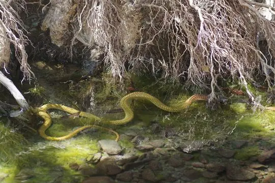
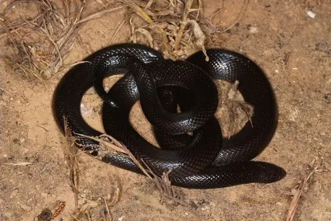
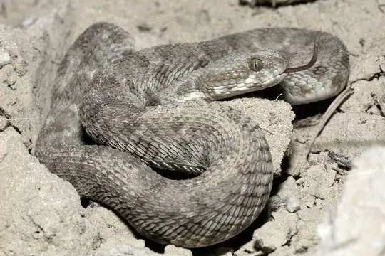
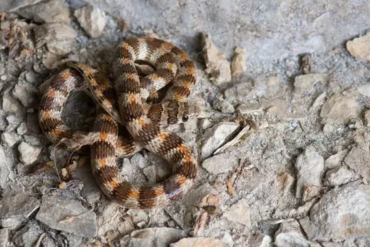

Snakes of Oman
24 living snake species are recorded in Oman in SnakeList: 16 venomous and 8 non-venomous, from 7 families.
- 24living species
- 16venomous
- 8non-venomous
- 7families
These totals count the unique living snake species SnakeList records in Oman. A species counts if it is recorded anywhere in the country, so not every snake lives in every part of it.
Species
Showing 24 species
- No photo yetAden Kukri SnakeRhynchocalamus arabicus
 Annulated Sea SnakeHydrophis cyanocinctus
Annulated Sea SnakeHydrophis cyanocinctus Arabian Cat SnakeTelescopus dhara
Arabian Cat SnakeTelescopus dhara
Arabian CobraNaja arabica Arabian Gulf Sea SnakeHydrophis lapemoides
Arabian Gulf Sea SnakeHydrophis lapemoides Arabian Sand BoaEryx jayakari
Arabian Sand BoaEryx jayakari Arabian Sand ViperCerastes gasperettii
Arabian Sand ViperCerastes gasperettii
Arabian Small-Scaled Burrowing AspAtractaspis andersonii Awl-headed SnakeLytorhynchus diadema
Awl-headed SnakeLytorhynchus diadema Common SeasnakeHydrophis schistosus
Common SeasnakeHydrophis schistosus Forskal Sand SnakePsammophis schokari
Forskal Sand SnakePsammophis schokari- No photo yetGünther's Sea SnakeMicrocephalophis cantoris
 Hook-snouted Worm SnakeMyriopholis macrorhyncha
Hook-snouted Worm SnakeMyriopholis macrorhyncha
Khosatzki’s Saw-scaled ViperEchis khosatzkii Moila SnakeMalpolon moilensis
Moila SnakeMalpolon moilensis Nurse's Blind SnakeMyriopholis nursii
Nurse's Blind SnakeMyriopholis nursii Oman Saw-scaled ViperEchis omanensis
Oman Saw-scaled ViperEchis omanensis Palestine Saw-scaled ViperEchis coloratus
Palestine Saw-scaled ViperEchis coloratus Persian Horned ViperPseudocerastes persicus
Persian Horned ViperPseudocerastes persicus Saw-scaled ViperEchis carinatus
Saw-scaled ViperEchis carinatus Short Sea SnakeHydrophis curtus
Short Sea SnakeHydrophis curtus
Thomas' Semi-banded RacerPlatyceps thomasi Wadi RacerPlatyceps rhodorachis
Wadi RacerPlatyceps rhodorachis Yellow Sea SnakeHydrophis spiralis
Yellow Sea SnakeHydrophis spiralis
No snakes in Oman match.
Oman’s snakes in numbers
- Families: Elapidae 7, Viperidae 6, Colubridae 5, Leptotyphlopidae 2, Psammophiidae 2, Atractaspididae 1, Boidae 1.
How precisely they are recorded
Of the 24 living species recorded in Oman, 15 are recorded by governorate in SnakeList’s data; 9 are recorded only for Oman as a whole, so the governorate pages list them as possible rather than recorded. SnakeList records each species by governorate, not by exact spot, so a species listed for a governorate may live in only part of it.
Governorates
The governorates where SnakeList records snakes, with how many living species are recorded in each. Each page has its species, venomous snakes, families, the species found only there, its cities and neighbours.
- Ad Dakhiliyah 4 species
- Al Batinah North 1 species
- Al Batinah South 1 species
- Al Wusta 1 species
- Ash Sharqiyah 1 species
- Ash Sharqiyah North 2 species
- Dhofar 11 species
- Musandam 2 species
- Muscat 2 species
No place matches that.
Cities
Its biggest cities, biggest first. SnakeList records snakes by governorate, not by city, so each city page shows the species recorded in its governorate and, separately, those only possible there - not species confirmed in the city.